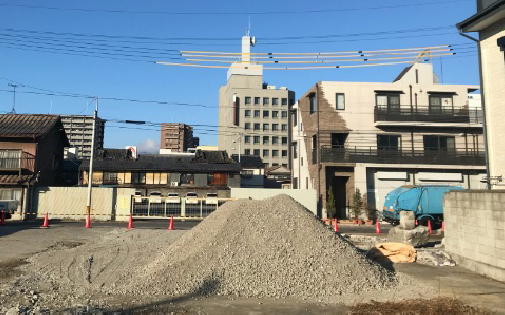
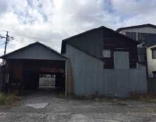
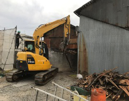
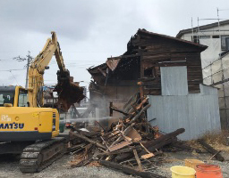
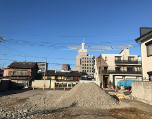

施工の手順
解体前の片づけから、手続きなど
何かと大変なお家の解体は、
エコネコルにご相談ください。
物置の解体から、お住まいの解体、またアパートや、工場の解体まで、お客様のご要望に応じて、片づけから解体まで全てエコネコルで行いますので面倒な手続きもなく、経済的です。 必要書類・申請書類提出のサポート体制も万全です。 ●登記申請のお手伝い ●銀行解体ローンのお手伝いなど。
-

1.まず、現場をかたづけます。
-

2.飛散防止のための養生の足場を組み工事にかかります。
-

3.防塵のための散水を行いながら、重機を使って安全に工事を進めます。
-

4.解体撤去が終わり、整地をし砕石で仕上げてお引き渡しをしました。
解体料金の目安
| 解体料 | 30,000円/坪〜 |
|---|---|
| 足場仮設養生料 | 12,000円/㎡〜 |
| 重機使用料 | 25,000円〜 |
| 重機回送料 | 30,000円〜 |
| 諸経費 | 諸経費 総額の5%〜 |